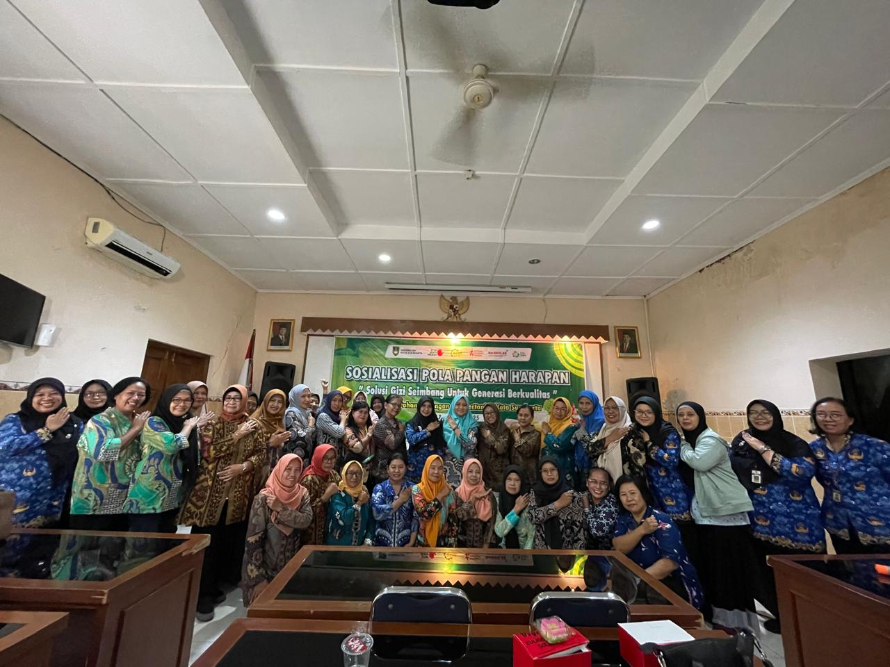

Berita Terkini

Sosialisasi Pola Pangan Harapan (PPH) Dukung Pencegahan Stunting di Kota Surakarta
Selasa, 15 Juli 2025 | 00.00 WIB

Penyerahan Bahan Stimulan Gizi Kepada 503 Ibu Menyusui di 49 Kelurahan di Kota Surakarta
Selasa, 15 Juli 2025 | 00.00 WIB

Dispangtan Surakarta Lakukan Pengawasan Mutu Pangan di SPPG
Rabu, 20 Mei 2025 | 00.00 WIB
Pelatihan Budidaya Tanaman Hidroponik bagi Kelompok Tani Milenial
Kamis, 22 Mei 2025 | 10.00 WIB
Pelatihan Budidaya Tanaman Hidroponik bagi Kelompok Tani Milenial
Kamis, 22 Mei 2025 | 10.00 WIB